Light and shade
Lesson 3 made the cube solid, but if you paint every face the same green it looks like a flat sticker. Today we add a lamp, so each face gets brighter or darker depending on which way it points. We go slowly: one small idea per part, with numbers you can check by hand, and a program to run after each big step.
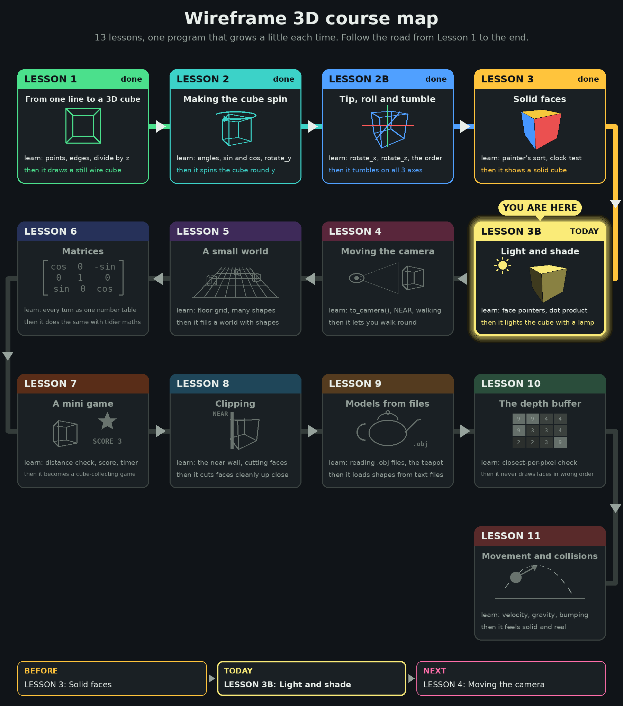
Before: Lesson 3, Solid faces filled the faces, painted them far to near and hid the ones turned away.
Today: light the faces with a lamp, so the cube looks solid even in one colour.
Next: Lesson 4, Moving the camera lets you walk round this lit cube.
Lighting used to be the last part of Lesson 3. It now has a lesson of its own, so each idea gets its own pictures and its own worked numbers.
Lesson plan
Who it's for: someone who finished Lesson 3 and can run step3_hide_back_faces.py. You need rotate_all, project(), the face list cube_faces, the clock test and the painter's sort from before. Needs: Python 3 and pip install pygame-ce, as before.
By the end, the learner can:
- Explain, with a torch and a card, why a surface facing a lamp is brighter than one turned away.
- Read an arrow written as numbers, and work out its length.
- Find a face's pointer by averaging its 4 corners, and say why it uses SHAPE coordinates.
- Explain what
LIGHT = (0.48, 0.6, -0.64)means and where those numbers came from. - Work out a dot product by hand and turn it into a brightness from 0 to 1.
- Turn a brightness into a colour, using
AMBIENTso shadows never go black.
Table 3B.0.2Lesson plan: time, part and what happens
| Time | Part | What happens |
|---|---|---|
| 0–4 | Recap | Why one colour looks flat. The plan: four small questions. Q1. |
| 4–12 | 1. The torch and the card | Count the rays that land on a card at 0°, 60°, 90° and 180°. Brightness as a number from 0 to 1. Q2–Q3. |
| 12–20 | 2. Arrows as numbers | An arrow is (across, up). Its length. Shrinking an arrow to length 1. Adding z for 3D. Q4–Q6. |
| 20–31 | 3. The face pointer | Six pointers on the unturned cube. Pointers turn with the cube. Finding one by averaging corners, top view, turn 30°. SHAPE, not WORLD. Run step1_face_pointers.py. Q7–Q9. |
| 31–37 | 4. The light arrow | LIGHT points toward the lamp. Building it from (12, 15, -16). Q10–Q11. |
| 37–50 | 5. The dot product | Flat arrows first. It matches the ray count. 3D: all six faces. Negative means no light. The start pose. Run step2_brightness.py. Q12–Q15. |
| 50–57 | 6. Brightness to colour | Multiply the colour. Black shadows. AMBIENT. Run step3_lit_cube.py. Q16–Q17. |
| 57–60 | Wrap up | The ideas from today. Final check Q18. Preview of Lesson 4. |
Recap: why one colour looks flat 4 MIN
At the end of Lesson 3 each face had its own colour (red front, blue left, gold top and so on), so you could always tell the faces apart. Real objects aren't painted like that. A green box is green on every side, and you still see its shape, because each side catches a different amount of light. Here is what happens if we paint the whole cube one green and add no light:
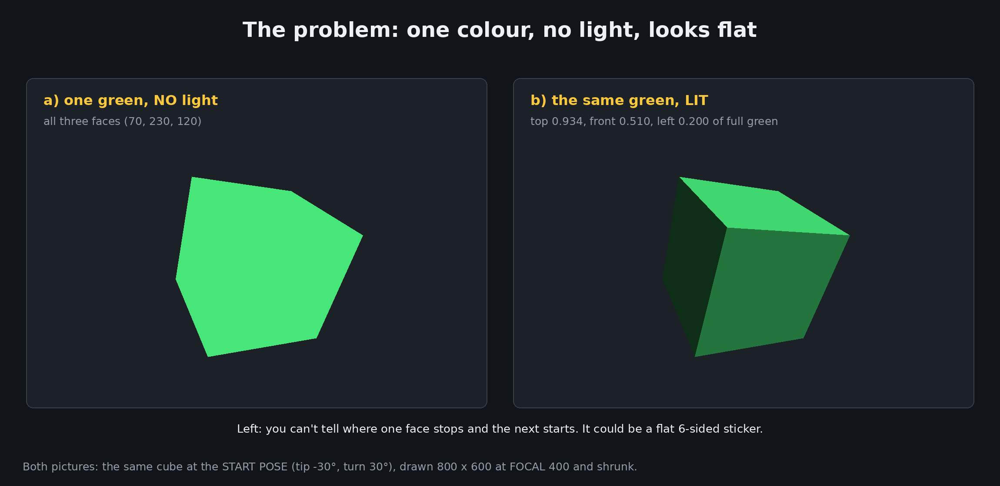
Both pictures use Lesson 3's START POSE: tipped by -30° (the top comes toward you) and turned by 30°, so you see the front, the left and the top. Every worked example today uses either this pose or the cube not turned at all.
To light one face, the computer answers four small questions, always in the same order. This picture is the map for the whole lesson; don't worry about the numbers yet, each one gets its own part.
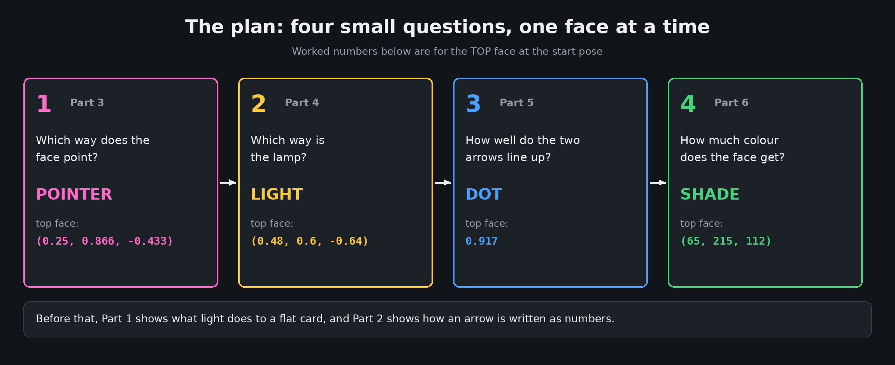
Q1In Fig 3B.0.3b, which face is brightest, and which is darkest? Where do you think the lamp is?
Show answer
Part 1: The torch and the card 8 MIN
1.1 Counting rays
Forget the cube for a moment. Hold a card under a lamp and look at it from the side. Think of the light as 12 straight rays falling from the lamp, evenly spaced across the card's width. The card's front is green and its back is grey. The white arrow shows which way the green front faces.
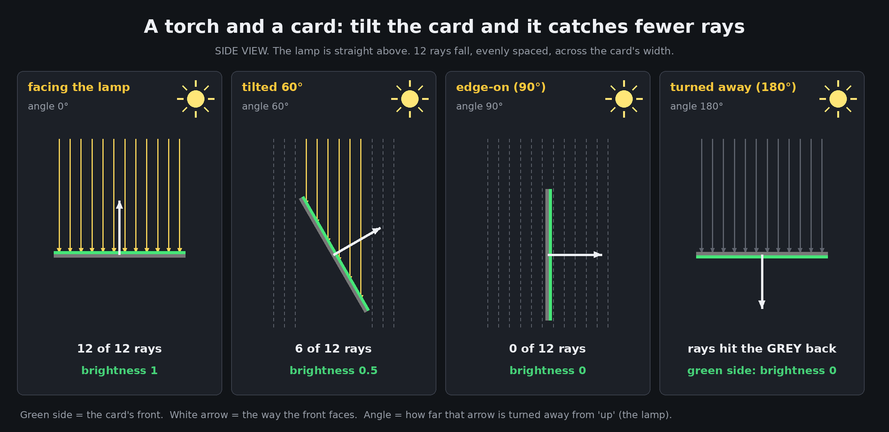
Walk through the four cards one at a time:
- 0°. The card lies flat, facing the lamp. All 12 rays land on it.
- 60°. The card is the same size, but tilted, so from above it looks narrower: only half as wide. It catches 6 of the 12 rays.
- 90°. The card stands on its edge. From above it has no width at all, so the rays slide past. 0 of 12.
- 180°. The card is upside down. All 12 rays land, but on the grey back. The green front gets nothing.
1.2 Brightness as a number
We call the share of rays that land on the front the face's brightness: (rays that land / rays sent). So 12 of 12 is (12 / 12) = 1, 6 of 12 is (6 / 12) = 0.5, and 0 of 12 is 0. Brightness is never more than 1 (you can't catch more rays than were sent) and never less than 0 (you can't catch fewer than none).
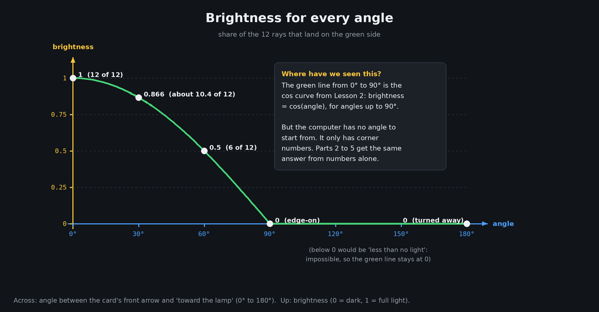
the more a face points AT the lamp,
the brighter it is (1 = full, 0 = none)That is all lighting is. The rest of the lesson is how the computer measures "how much does this face point at the lamp?" using only numbers.
The computer has a problem here: it doesn't know any angles. All it has is the corner numbers of the cube. Parts 2 to 5 find the same brightness from numbers alone, and in Part 5 we check that the answer really matches these ray counts.
Q2A card catches 9 of the 12 rays. What is its brightness?
Show answer
(9 / 12) = 0.75.Q3Two cards are tilted 60°, one to the left and one to the right. Which is brighter?
Show answer
Part 2: Arrows as numbers 8 MIN
2.1 An arrow is (across, up)
In Part 1 we drew which way the card faces as a white arrow. A computer can't store a drawing, so it stores the arrow as numbers. On a flat grid, two numbers are enough: how far across, and how far up, from the arrow's start to its tip.
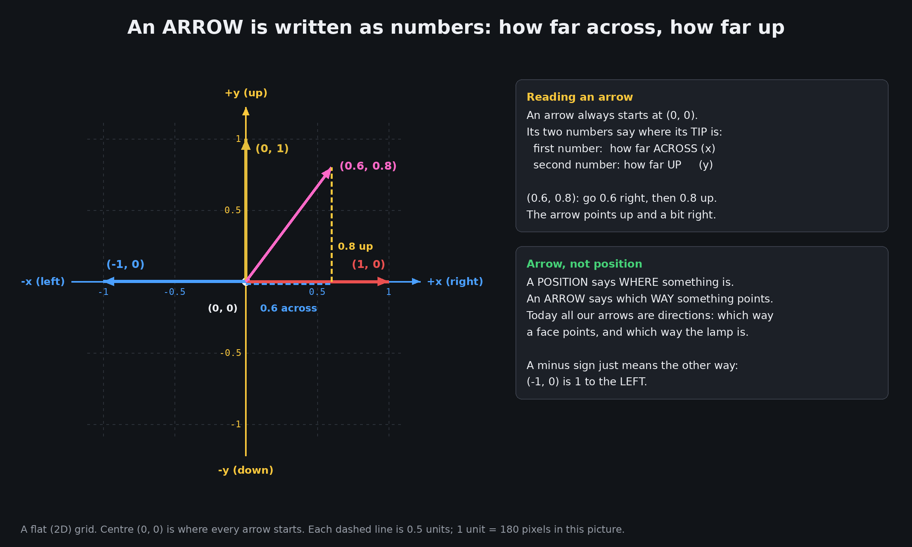
These arrows are directions, not positions. A position says where something is; an arrow says which way something points. Every arrow today starts at (0, 0), so we only ever need to write its tip.
2.2 How long is an arrow?
The across part and the up part make a right-angled triangle, and the arrow is its long side. Pythagoras gives the length: square each part, add them, take the square root. (Square root is written root(...) here, and math.sqrt(...) in Python.)
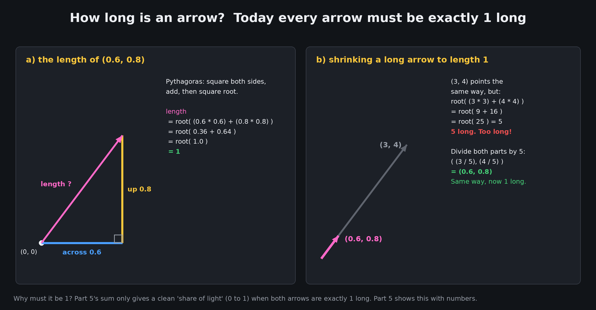
Step by step for (3, 4): root( (3 * 3) + (4 * 4) ) = root( 9 + 16 ) = root( 25 ) = 5. Divide each part by 5: ( (3 / 5), (4 / 5) ) = (0.6, 0.8), which we just showed is 1 long. Why do we care about length 1? Because in Part 5 the brightness sum only gives a number from 0 to 1 when both arrows are exactly 1 long. We'll see it with numbers there.
2.3 Arrows in 3D
Our cube lives in 3D, so its arrows need a third number, z: how far away from you. Remember from Lesson 1 that +z points away into the screen, so -z points toward you.
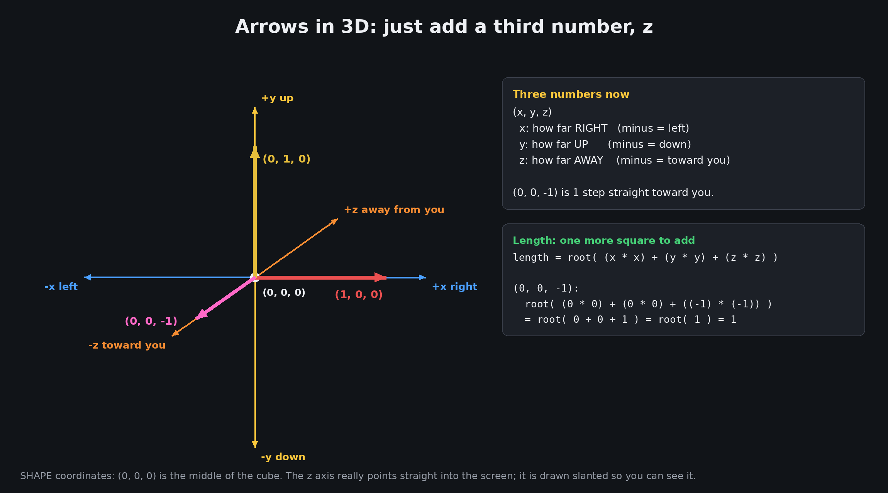
root( (x * x) + (y * y) + (z * z) ).Q4Which way does the arrow (0, -1) point? And (-0.6, 0.8)?
Show answer
Q5How long is (0.8, 0.6)? How long is (6, 8)? Make (6, 8) 1 long.
Show answer
root( (0.8 * 0.8) + (0.6 * 0.6) ) = root( 0.64 + 0.36 ) = root( 1.0 ) = 1. root( (6 * 6) + (8 * 8) ) = root( 36 + 64 ) = root( 100 ) = 10. Divide by 10: ( (6 / 10), (8 / 10) ) = (0.6, 0.8).Q6In 3D, which way does (0, 0, 1) point?
Show answer
root( (0 * 0) + (0 * 0) + (1 * 1) ) = root( 1 ) = 1.Part 3: The face pointer 11 MIN
The first of our four questions: which way does a face point? We answer it with an arrow called the face's pointer, like the white arrow on the card in Part 1.
3.1 Six pointers on the unturned cube
Each pointer starts at the middle of the cube, (0, 0, 0), and goes straight out through the middle of one face. Because the cube's corners are all at -1 or +1, the middle of each face is exactly 1 step away along one axis.
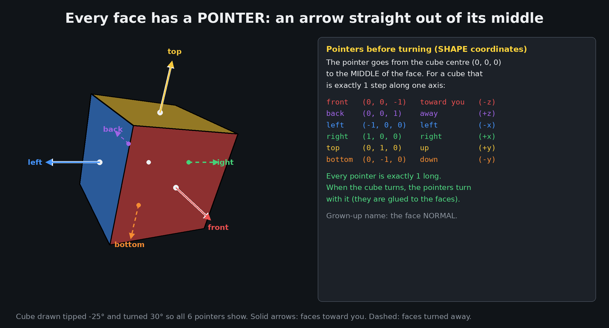
For example the front face is the side toward you, so its pointer points toward you: (0, 0, -1). The top points up: (0, 1, 0).
3.2 The pointer turns with the cube
The pointers are glued to their faces. When the cube turns, they turn too. To see this clearly, look down on the cube from above (a top view), so only x and z show, and turn it with Lesson 2's turn (around y).
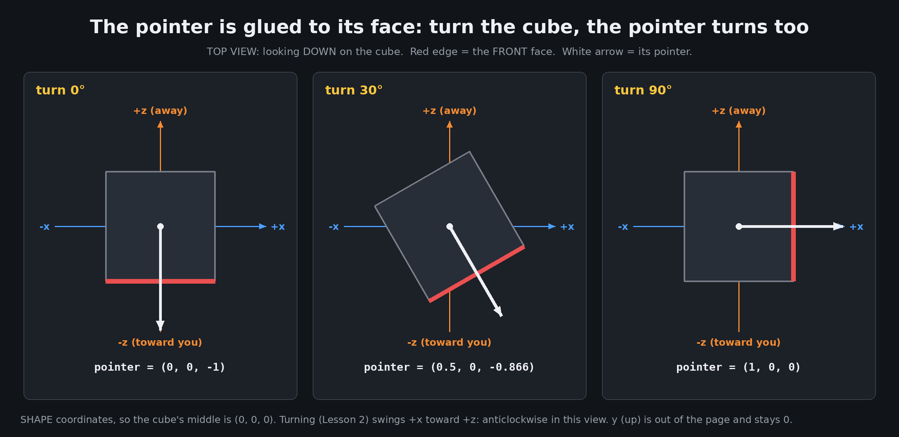
We could turn every pointer with rotate_all, the same way we turn the corners. But there is an easier way, which needs no extra turning at all.
3.3 The middle of a face is its pointer
The pointer goes from the cube's middle to the face's middle. The cube's middle is (0, 0, 0), so the pointer's tip IS the face's middle. And the middle of 4 corners is their average: add the four x values and divide by 4, then the same for y and for z. We already turn the corners every frame, so we just average the turned corners.
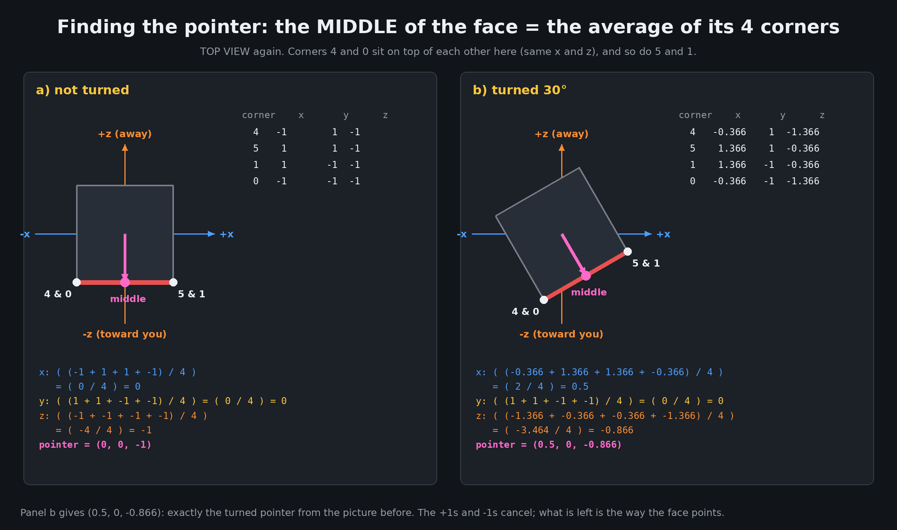
Panel b, column by column. x: ( (-0.366 + 1.366 + 1.366 + (-0.366)) / 4 ) = ( 2.0 / 4 ) = 0.5. y: ( (1 + 1 + -1 + -1) / 4 ) = ( 0 / 4 ) = 0. z: ( (-1.366 + -0.366 + -0.366 + -1.366) / 4 ) = ( -3.464 / 4 ) = -0.866. The bits that stick out to each side cancel, and what is left is the way the face points.
def face_pointer(corners, turned_points):
total_x = 0
total_y = 0
total_z = 0
for corner_number in corners: # the face's 4 corner numbers
x, y, z = turned_points[corner_number]
total_x = (total_x + x)
total_y = (total_y + y)
total_z = (total_z + z)
count = len(corners) # 4
return ( (total_x / count), (total_y / count), (total_z / count) )3.4 SHAPE corners, not WORLD corners
Careful: average the corners after turning but before adding cube_distance. Those are the turned SHAPE points, measured from the cube's middle. The WORLD points have 5 added to every z, so they are measured from you.
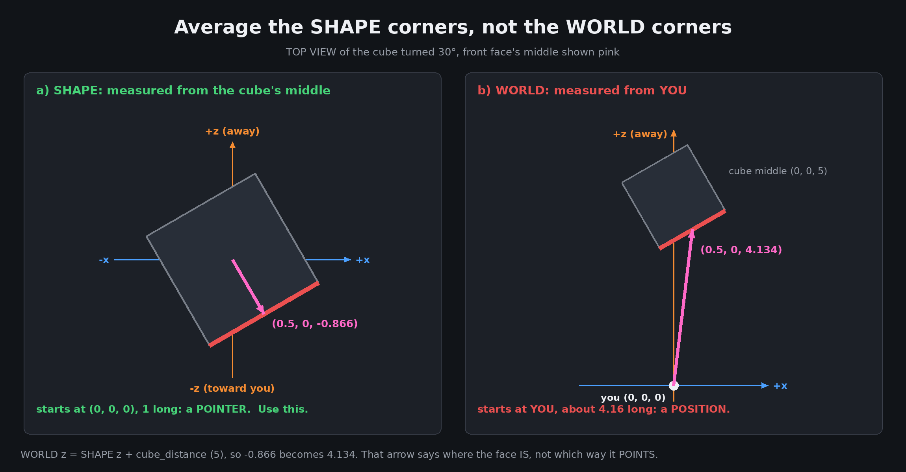
That is why the code now keeps a third list, turned_points, beside world_points and screen_points. Each list has its own job: SHAPE for pointers, WORLD for the painter's sort, SCREEN for the clock test and drawing.
3.5 The start pose
The start pose has a tip as well as a turn, so the numbers are less round, but the method is exactly the same: average the 4 turned corners.
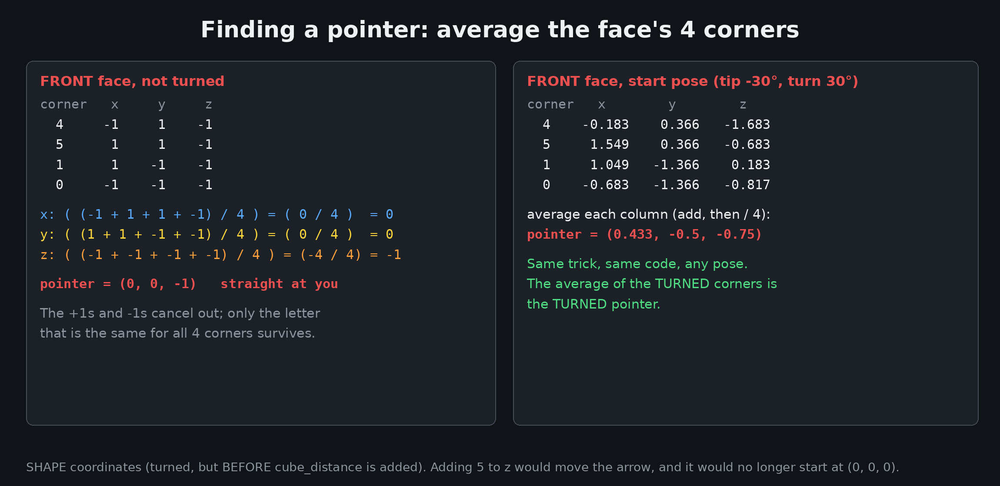
The same sum for the other two faces you can see gives these pointers. You will meet all three again in Part 5:
Table 3B.3.6The three visible faces' pointers at the start pose (SHAPE coordinates)
| Face | Pointer (x, y, z) | In words |
|---|---|---|
| front | (0.433, -0.5, -0.75) | mostly toward you, a bit right and down |
| left | (-0.866, 0, -0.5) | mostly left, a bit toward you |
| top | (0.25, 0.866, -0.433) | mostly up, a bit toward you |
3.6 Run it: see the pointers
step1_face_pointers.py starts from Lesson 3's last program. It paints the cube one green, with no light yet, and draws each visible face's pointer as a white arrow with its three numbers.
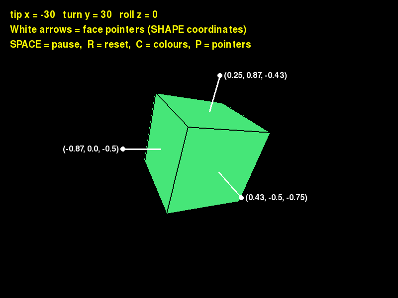
step1_face_pointers.py at the start pose. The labels match Table 3B.3.6 (rounded to 2 places). SPACE pauses, R goes back to the start pose, C swaps to six colours, P hides the arrows.Notice how flat the cube looks with no light: only the thin black outlines show the edges. Let it tumble and watch one arrow: its three numbers change all the time, but none ever goes above 1 or below -1, because the arrow is always 1 long.
Q7Average the right face's corners when the cube is not turned: (1, 1, -1), (1, 1, 1), (1, -1, 1), (1, -1, -1). What pointer do you get?
Show answer
( (1 + 1 + 1 + 1) / 4 ) = ( 4 / 4 ) = 1. y: ( (1 + 1 + -1 + -1) / 4 ) = 0. z: ( (-1 + 1 + 1 + -1) / 4 ) = 0. Pointer (1, 0, 0): straight right, as in Fig 3B.3.1.Q8At turn 90° the front pointer is (1, 0, 0) (Fig 3B.3.2c). Which face's pointer was (1, 0, 0) before turning? What has happened?
Show answer
Q9Why does face_pointer use turned_points and not world_points?
Show answer
Part 4: The light arrow 6 MIN
The second question: which way is the lamp? We answer it with one more arrow, called LIGHT.
4.1 LIGHT points toward the lamp
Imagine the lamp is far away, like the sun. Then its rays all arrive side by side, travelling the same way, and every face of the cube sees the lamp in the same direction. So we don't store where the lamp is, only which way it is.
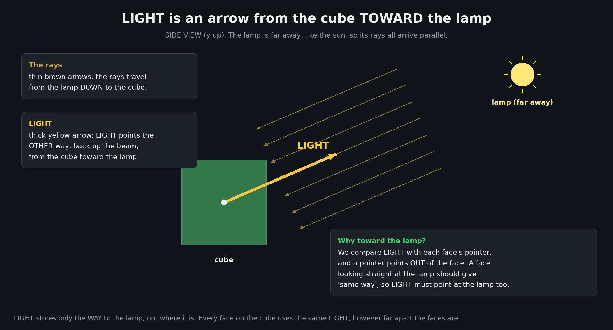
This is the easiest thing to get backwards, so it is worth saying twice: LIGHT points from the cube toward the lamp.
4.2 Building LIGHT
We put the lamp up, a little to the right and in front of the cube, over your right shoulder. Photographers light objects like this because then the three faces you see each get a different brightness. LIGHT is built from that choice in three steps.
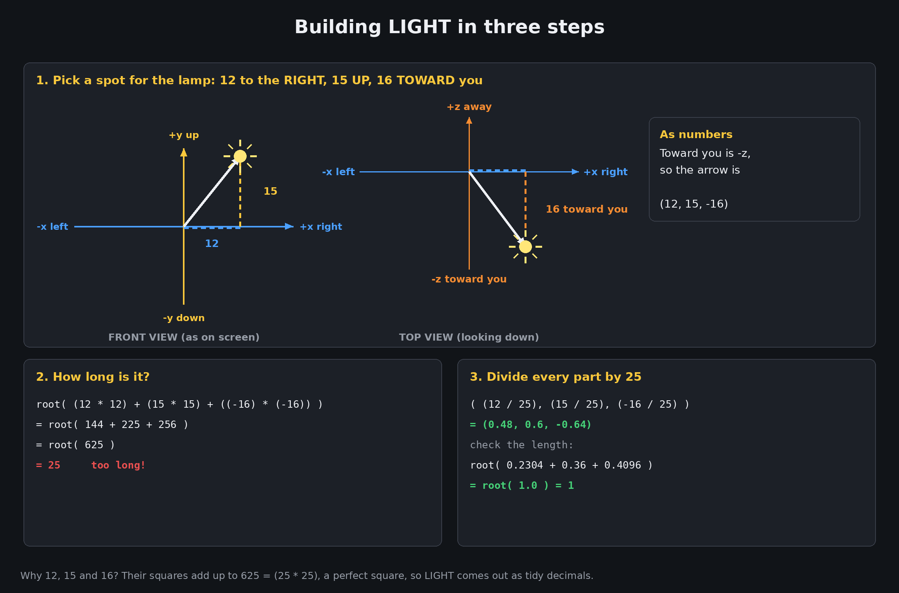
Inside out: (12 * 12) = 144, (15 * 15) = 225, ((-16) * (-16)) = 256; (144 + 225 + 256) = 625; root(625) = 25. Then (12 / 25) = 0.48, (15 / 25) = 0.6, (-16 / 25) = -0.64.
LIGHT = (0.48, 0.6, -0.64) # right a bit, up, toward you: 1 longThe lamp never moves. Only the cube turns, so only the pointers change from frame to frame.
Q10Someone writes LIGHT = (-0.48, -0.6, 0.64). Where would that lamp be?
Show answer
Q11You want a lamp straight overhead. What is LIGHT? Is it 1 long?
Show answer
(0, 1, 0). Length root( (0 * 0) + (1 * 1) + (0 * 0) ) = root( 1 ) = 1, so yes.Part 5: The dot product 13 MIN
The third question: how well do the face's pointer and LIGHT line up? If they point the same way the face looks at the lamp (brightness 1). If they are at right angles, the light just skims past (brightness 0). We need a sum that turns two arrows into that number.
5.1 Multiply the matching numbers, then add
The sum is called the dot product. Multiply the two x numbers together, multiply the two y numbers together, and add the answers. Try it on flat arrows first:
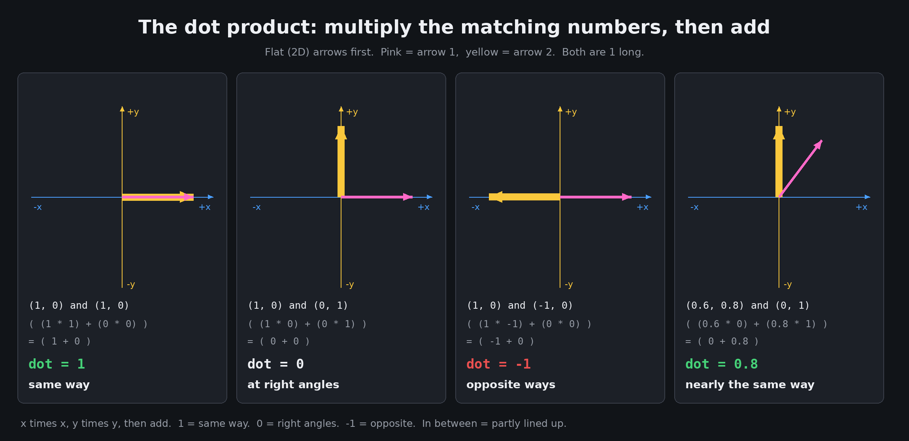
Look at panel d. LIGHT there is (0, 1), straight up, so the x pair is (0.6 * 0) = 0 and drops out. The dot keeps only the arrow's "up" part, 0.8: how much of the arrow points at the lamp.
5.2 It matches the rays
Now the check promised in Part 1. Put the cards back under the lamp. The lamp is straight up, so LIGHT is (0, 1). Each card's pointer is a 1-long arrow, and the dot product should give the same brightness as counting rays.
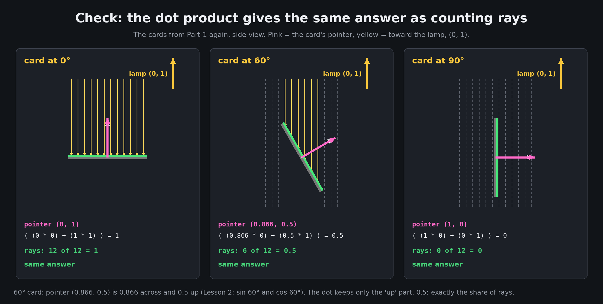
sin(60°) = 0.866 across and cos(60°) = 0.5 up, from Lesson 2's unit circle. The dot product and the ray count agree on every card.Panels: 3B.5.2a (left) card at 0° · 3B.5.2b (middle) card at 60° · 3B.5.2c (right) card at 90°brightness = dot(pointer, LIGHT)
= ( (x1 * x2) + (y1 * y2) + (z1 * z2) )When both arrows are 1 long, the dot product IS the share of light the face catches. This one line replaces counting rays and measuring angles.
This is why both arrows had to be 1 long. If the pointer were (3, 4) instead of (0.6, 0.8), the dot with (0, 1) would be 4: "four times full light", which makes no sense. Keeping both at length 1 keeps the answer between -1 and 1.

5.3 In 3D: all six faces
In 3D there is one more pair to multiply, the two z numbers. Start with the cube not turned, because its pointers are so simple: each has only one number that isn't 0, so only one pair survives.
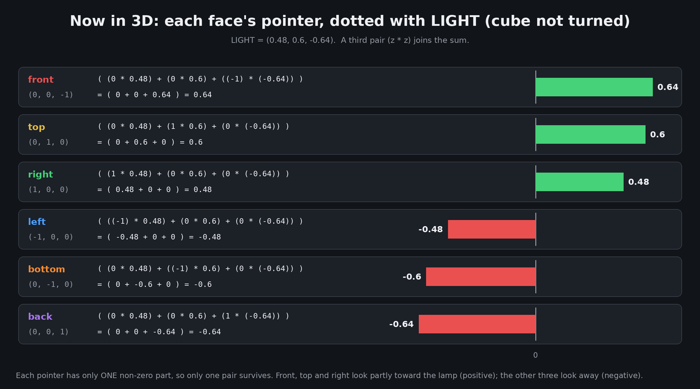
The front face, inside out: (0 * 0.48) = 0, (0 * 0.6) = 0, ((-1) * (-0.64)) = 0.64 (minus times minus is plus), so ( 0 + 0 + 0.64 ) = 0.64. Three faces get positive numbers, the three on the lamp's side. The other three get negative numbers.
5.4 Negative means no light
A negative dot means the face looks away from the lamp, like the upside-down card in Fig 3B.1.1d. A face can't catch less than no light, so we change any negative number to 0.
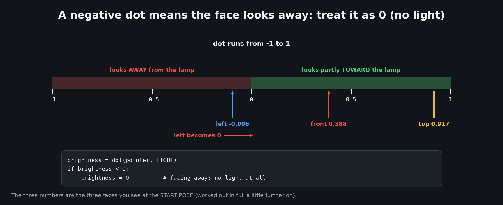
def brightness_of(pointer):
brightness = dot(pointer, LIGHT) # -1 .. 1
if brightness < 0:
brightness = 0 # facing away: no light
return brightness # 0 .. 15.5 The start pose
Now the real numbers: the three pointers from Table 3B.3.6, each dotted with LIGHT, one pair at a time.
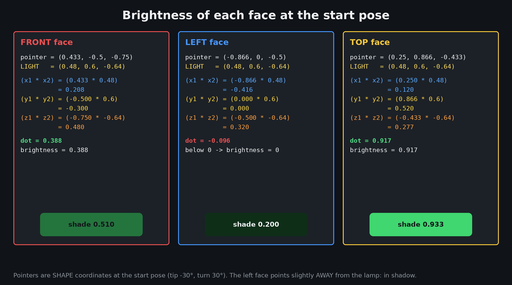
The front face, written out in full: ( (0.433 * 0.48) + ((-0.5) * 0.6) + ((-0.75) * (-0.64)) ) = ( 0.208 + -0.300 + 0.480 ) = 0.388.
5.6 Run it: brightness on every face
step2_brightness.py adds LIGHT, dot() and brightness_of(), multiplies the green by the brightness (Part 6.1 explains the multiplying), and writes each face's brightness in its middle.
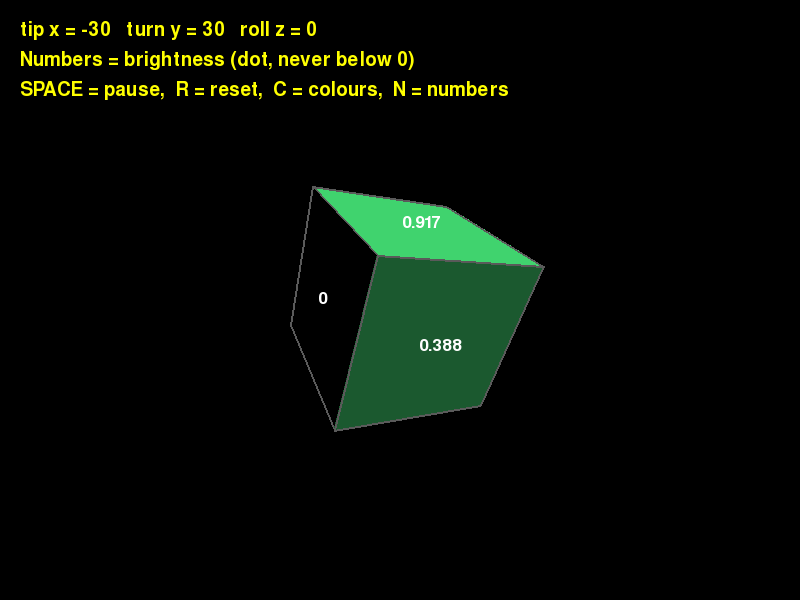
step2_brightness.py at the start pose. The three numbers match Fig 3B.5.6. N hides the numbers. Notice the left face: it is pure black, and only its grey outline shows it is there.Q12Work out the dot product of (0.6, 0.8) and (0.8, 0.6). Do they point nearly the same way?
Show answer
( (0.6 * 0.8) + (0.8 * 0.6) ) = ( 0.48 + 0.48 ) = 0.96. Yes: 0.96 is close to 1.Q13Before any turning, what is the dot product of the top face's pointer (0, 1, 0) with LIGHT?
Show answer
( (0 * 0.48) + (1 * 0.6) + (0 * (-0.64)) ) = ( 0 + 0.6 + 0 ) = 0.6. Only the y pair survives, as in Fig 3B.5.4.Q14The bottom face (cube not turned) has dot -0.6. What brightness does it get, and why?
Show answer
Q15Change LIGHT to (0, 1, 0), straight overhead. Before any turning, which faces get light?
Show answer
( (0 * 0) + (1 * 1) + (0 * 0) ) = 1. The front, back, left and right all give 0 (side-on) and the bottom gives -1, changed to 0.Part 6: Brightness to colour 7 MIN
The last question: how much colour does the face get? We have a brightness from 0 to 1. Now we turn it into a colour pygame can paint.
6.1 Multiply the colour
A colour is three numbers, red, green and blue, each from 0 to 255. To make it darker by the same amount all over, multiply all three by the brightness and round to whole numbers.
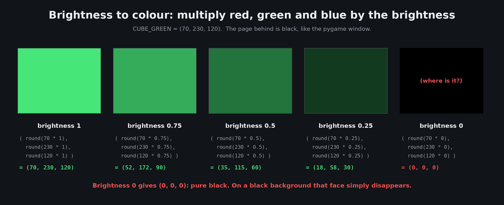
round(70 * 0.5) = 35, round(230 * 0.5) = 115, round(120 * 0.5) = 60. The same green, half as bright. Brightness 0 gives black, which vanishes on the black window.That is what step 2 does, and it is why its left face disappeared in Fig 3B.5.7.
6.2 AMBIENT: a little light everywhere
In a real room no side of a box is ever pitch black: light bounces off the walls and reaches it a little. We copy that with a number called AMBIENT: the share of colour every face gets, even in full shadow. We use AMBIENT = 0.2, 20%: enough to see a shadowed face clearly, but still much darker than a lit one. The lamp adds the rest on top.
shade = ( AMBIENT + ( (1 - AMBIENT) * brightness ) )Every face gets AMBIENT (0.2). The lamp can add up to (1 - AMBIENT) = 0.8 more, scaled by the brightness. So shade always runs from 0.2 to 1.0, never 0.
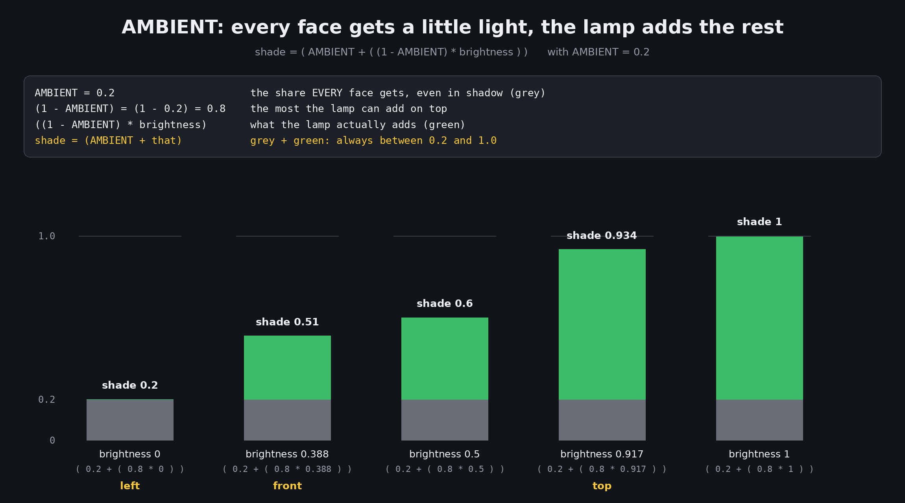
The front face at the start pose, inside out: (1 - 0.2) = 0.8; (0.8 * 0.388) = 0.310; (0.2 + 0.310) = 0.510. Then the colour is CUBE_GREEN times 0.510, rounded.

AMBIENT = 0.2
def shade_colour(colour, pointer):
brightness = dot(pointer, LIGHT) # -1 .. 1
if brightness < 0:
brightness = 0 # facing away from the light
shade = ( AMBIENT + ( (1 - AMBIENT) * brightness ) ) # 0.2 .. 1
red, green, blue = colour
return ( round(red * shade), round(green * shade), round(blue * shade) )6.3 Run it: the lit cube
step3_lit_cube.py is the finished lit cube, and the program Lesson 4 starts from. Let it tumble and watch each face brighten as it turns toward the upper right, where the lamp is.
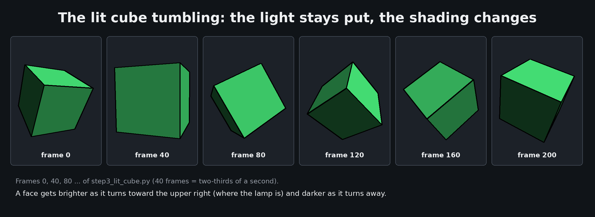
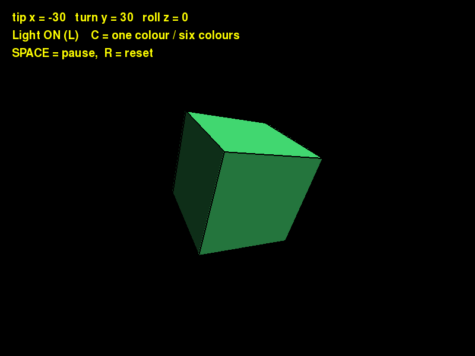
step3_lit_cube.py at the start pose. Compare the left face with Fig 3B.5.7: now it is dark green, not black. L switches the light off and on, C swaps between one green and the six face colours.Q16With AMBIENT = 0.2, what shade does a face get at brightness 0.5? What does CUBE_GREEN's 230 become?
Show answer
( 0.2 + ( 0.8 * 0.5 ) ) = ( 0.2 + 0.4 ) = 0.6. Green becomes round(230 * 0.6) = 138.Q17What happens to the cube if you set AMBIENT = 1?
Show answer
(1 - AMBIENT) = 0, so the lamp adds nothing and every shade is ( 1 + ( 0 * brightness ) ) = 1. Every face is full green: the flat sticker of Fig 3B.0.3a again.Wrap up 3 MIN
1. The more a face points at the lamp, the more light it catches: brightness from 0 (none) to 1 (full).
2. An arrow is written as numbers (x, y, z). Its length is root( (x * x) + (y * y) + (z * z) ), and dividing by the length makes it 1 long.
3. A face's pointer is the average of its 4 turned SHAPE corners: an arrow from the cube's middle straight out of the face.
4. LIGHT = (0.48, 0.6, -0.64) points from the cube toward the lamp, and is 1 long.
5. The dot product ( (x1 * x2) + (y1 * y2) + (z1 * z2) ) of two 1-long arrows is the share of light; negative becomes 0.
6. shade = ( AMBIENT + ( (1 - AMBIENT) * brightness ) ), then multiply the colour by shade. AMBIENT stops shadows going black.
Q18Final check: list, in order, what step3_lit_cube.py does to colour one face.
Show answer
shade = ( 0.2 + ( 0.8 * brightness ) ). 6. Multiply red, green and blue by the shade and round them.Practice before Lesson 4
- Add keys that move the lamp: J and K to swap LIGHT between (0.48, 0.6, -0.64) and (-0.48, 0.6, -0.64). Which faces swap brightness?
- Make your own LIGHT from a whole-number arrow, for example (2, 3, -6): work out its length (it is 7) and divide by it. Check the result is 1 long.
- Try AMBIENT = 0, 0.2 and 0.6 and decide which looks best to you.
- Colour the shadow side with a hint of blue instead of plain dark: add a small amount to blue only when the brightness is 0.
Next time: Lesson 4, moving the camera
Until now the cube has done all the moving while you stood still at (0, 0, 0). In Lesson 4 you walk around the lit cube and look about. The lamp belongs to the world, so it stays where it is while you walk: you will be able to walk round to the cube's dark side.
Files
Download the code for this lesson (right-click a file and choose Save link as):
code/step1_face_pointers.py: one green, no light; draws each visible face's pointer with its numbers; P hides themcode/step2_brightness.py: LIGHT and the dot product; brightness only, so shadows go black; N shows the numberscode/step3_lit_cube.py: the finished lit cube with AMBIENT; L for light, C for coloursimages/: every diagram on this page as a PNG- Figure index: every figure and table in the course, with its number. Numbers read
Fig lesson.part.figure, plus a letter for one panel of a picture (for exampleFig 3B.3.2b).